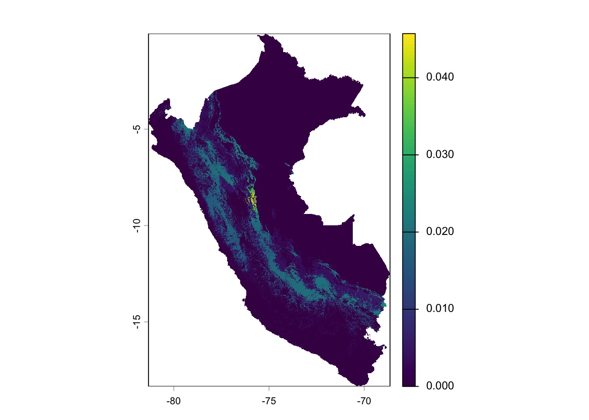
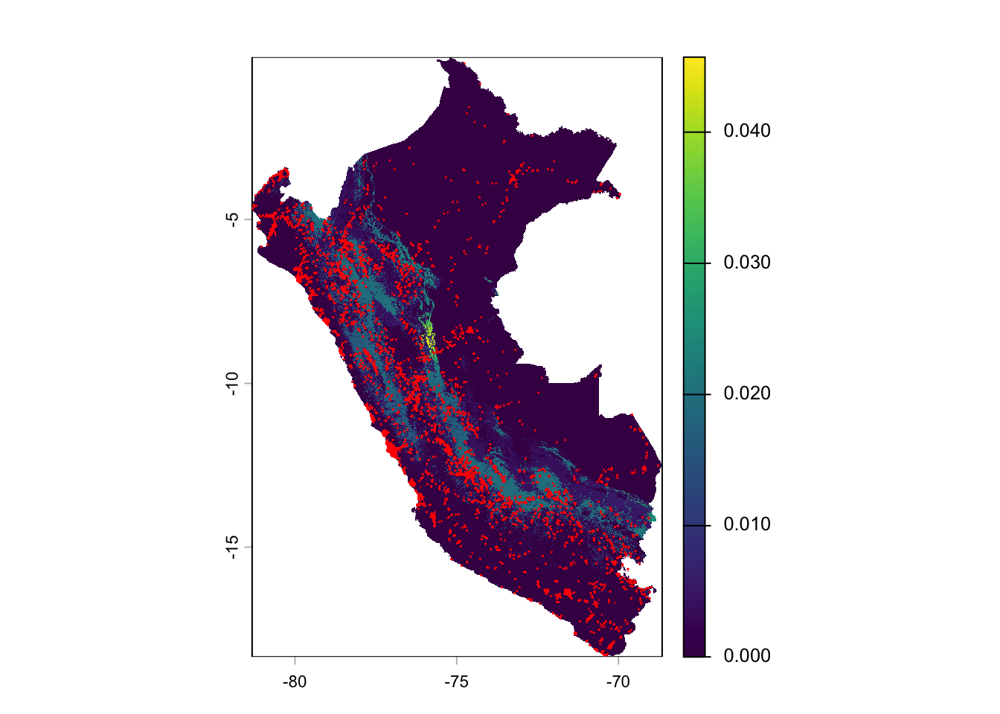
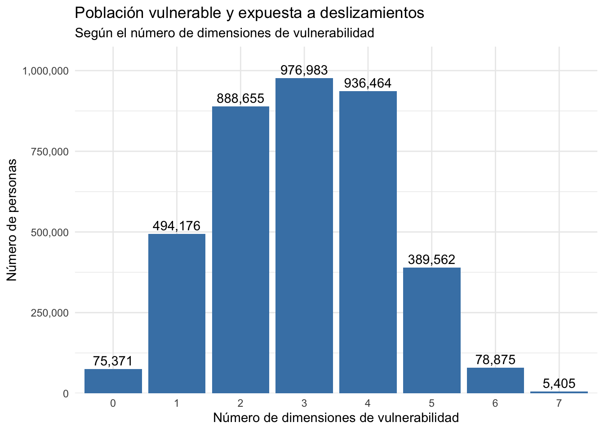

install.packages(
c(
"tidyverse",
"haven",
"gt",
"openxlsx",
"terra",
"sf"
)
)La perspectiva geográfica de las encuestas
ciencia de datos
rstats
análisis reproducible
encuestas
gis
análisis geográfico
tidyverse
Explorando el riesgo parte 2: los paquetes sf y terra
Video
Puedes encontrar el vídeo de implementación de esta sesión en YouTube:
Introducción
En esta sesión, exploraremos cómo agregar la perspectiva geográfica a nuestro análisis con los paquetes sf y terra. En la sesión previa de Encuestas de Hogares identificamos a las personas que son vulnerables según una serie de dimensiones por características personales y aquellas de su hogar. Esto hace que esas personas tengan una mayor dificultad para enfrentar y recuperarse de un evento natual extremo. Sin embargo, como vimos, en un país como Perú, puede ser alta la proporción de personas que cumplen con con características como esas. Si el país quiere contar con uno o varios programas de preparación ante enventos extremos, deberá asignar sus recursos limitados a la fracción de individuos que tenga mayores probabilidades de ser afectado por un evento de esa naturaleza. Ahí es donde entra la dimensión geográfica que exploraremos hoy.
Asegúrate de tener instalado R y Positron para seguir este ejemplo. Estos los debes instalar en el siguiente orden y puedes encontrarlos en:
Si no tienes instalados los paquetes que usaremos, puedes utilizar la funcionalidad de Positron para instalar paquetes, es decir el ícono de una caja de cartón en tu barra de la izquierda. Alternativamente, puedes correr lo siguiente en la consola de R:
Los Datos
En esta sesión utilizaremos los datos reales de la Encuesta Nacional de Hogares (ENAHO) de Perú, que se encuentran disponibles en el repositorio de datos Instituto Nacional de Estadística e Informática (INEI) (INEI, 2026). Los datos de la ENAHO son una fuente valiosa para analizar las condiciones de vida de los hogares peruanos. Utilizaremos los datos más recientes disponibles con cálculos de pobreza y agregado de consumo, que corresponden al año 2025. Entre los datos disponibles, hay muchos módulos y en esta ocasión, utilizaremos solamente los datos de la vivienda, los cuales combinaremos con datos de nuestro análisis previo en la sesión de encuestas de hogares.
Adicionalmente utilizaremos datos del mapa global de amenaza de deslizamiento del Banco Mundial (World Bank, 2021), del cual hemos extraido el área correspondiente a Perú, que puede ser descargada líneas abajo. Específicamente nos centramos en el mapa de amenaza de deslizamiento provocado por lluvia, con base en la mediana entre 1980 y 20181.
El mapa representa la frecuencia anual estimada de ocurrencia de deslizamientos significativos provocados por lluvia, calculada para el período 1980–2018. Cada celda del ráster corresponde aproximadamente a 1 km² y su valor indica el número esperado de deslizamientos significativos por año en esa superficie. Por ejemplo, un valor de 0.01 equivale aproximadamente a una frecuencia de un deslizamiento cada 100 años por km², mientras que un valor de 0.001 corresponde aproximadamente a uno cada 1,000 años. Es decir, el número indica a grandes rasgos una fracción en el que el inverso es el lapso que transcurrirá en años entre dos eventos en esa ubicación geográfica.
El mapa combina información sobre la susceptibilidad del terreno, derivada del mapa global de susceptibilidad de NASA (NASA Global Precipitation Measurement Mission, 2020), con información histórica sobre las precipitaciones. A diferencia de un mapa de susceptibilidad, que indica qué tan propenso es el terreno a deslizarse dadas sus características físicas, este mapa intenta estimar con qué frecuencia puede ocurrir efectivamente un deslizamiento cuando se considera también el mecanismo que lo desencadena, en este caso la lluvia. El modelo estima inicialmente probabilidades de ocurrencia bajo distintas condiciones de precipitación y luego las anualiza para obtener frecuencias de deslizamiento.
Para facilitar su interpretación, el estudio del Banco Mundial (Redshaw et al., 2020) propone los siguientes umbrales de peligro:
| Frecuencia anual estimada por km² | Nivel de peligro | Interpretación aproximada |
|---|---|---|
| - < 0.0001 | Muy bajo | Menos de 1 evento cada 10,000 años |
| - 0.0001 – 0.001 | Bajo | Entre 1 cada 10,000 y 1 cada 1,000 años |
| - 0.001 – 0.01 | Medio | Entre 1 cada 1,000 y 1 cada 100 años |
| - > 0.01 | Alto | Más de 1 cada 100 años |
Dado que el mapa de amenazas es de carácter global, el tamaño de archivo es muy grande para incluirlo en este repositorio. Como referencia, muestro aquí una rutina utilizada para extraer solamente lo correspondiente a Perú que utilicé para crear el archivo que te puedes descargar abajo. Esto lo hacemos para mantener el tamaño de este repositorio entre los límites de GitHub. Las funciones usadas aquí corresponden al paquete terra.
# Mapa global de deslizamientos
deslizamientos <- terra::rast("datos/gis/per/LS_RF_Median_1980-2018_COG.tif")
# Capa vectorial de límites administrativos de Perú
peru <- terra::vect("datos/gis/per/PER-adm0.gpkg")
# Primero recortamos un rectángulo del tamaño de Perú del mapa global
deslizamientos_peru <- terra::crop(deslizamientos, peru)
# Segundo cortamos las áreas del rectángulo fuera de los límites
# a la medida de la forma del país
deslizamientos_peru <- terra::mask(deslizamientos_peru, peru)
# Finalmente lo exportamos en formato raster para usarlo en
# nuestro análisis
writeRaster(
deslizamientos_peru,
"datos/gis/per/PER_LS_RF_Median_1980-2018.tif",
overwrite = TRUE,
NAflag = -9999,
gdal = c("COMPRESS=DEFLATE", "TILED=YES")
)
TipDescargas
- Características de la Vivienda y del Hogar: datos SPSS | preguntas módulo vivienda.
- Mapa de amenaza de deslizamiento provocado por lluvia (mediana 1980-2018): raster | reporte.
- Vector de límites de Perú de SIGRID: vector.
Metodología
En nuestra sesión anterior estimamos el número de peruanos que experimentarían vulnerabilidad ante eventos climáticos extremos. Para esto, utilizamos ideas de Doan et al. (2023) en las que entendemos que la “vulnerabilidad de un hogar ante un evento climático extremo dependerá de las características del hogar que determinan el impacto inicial del evento y la capacidad del hogar para afrontarlo (…). Esto se refleja en la definición del IPCC: la vulnerabilidad incluye tanto ‘la sensibilidad o susceptibilidad al daño’ como ‘la falta de capacidad para afrontar y adaptarse’”.
Siguiendo las ideas de Doan et al. (2023) identificamos una serie de dimensiones de la vulnerabilidad2, entre las cuales vimos diferentes criterios para catalogar a los miembros de los hogares como vulnerables según:
- Ingreso/gasto.
- Educación.
- Acceso a agua.
- Acceso a saneamiento.
- Materiales de construcción.
- Protección social.
Pero según la metodología, eso es solo un lado de la moneda. Estas personas son vulnerables, pero eso será un problema solo si están ubicados en un lugar en donde un desastre puede alcanzarlos. Para eso, contrastamos su condición de vulnerablidad contra la distribución geográfica de los lugares en donde es más probable que encuentren ese tipo de riesgo.
Tenemos la suerte que nuestros amigos del INEI de Perú incluyeron datos acerca de la ubicación geográfica del conglomerado estadístico en el que se encuentran las viviendas en la ENAHO a través de las variables LATITUD y LONGITUD de nuestro marco de datos viviendas. Aquí cabe explicar que no están dándonos la ubicación de cada vivienda, lo cual iría contra los principios de confidencialidad. Eso quiere decir que todas las viviendas de un conglomerado comparten la misma ubicación geográfica, pero esto nos da ya un aproximado de contra qué el valor de posible frecuencia en años de ocurrencia de deslizamiento ocasionado por lluvias del mapa se pueden asociar esas viviendas.
Vimos arriba que los mismos autores del mapa otorgan una calificación de peligro “alta” a aquellas viviendas que se encuentren en una ubicación con un valor de frecuencia anual estimada por km² mayor a 0.01 equivalente a más de 1 cada 100 años.
Preámbulo
Primeramente limpiamos el área de trabajo y cargamos las librerías correspondientes para el análisis.
# Limpiar el área de trabajo
rm(list = ls())
# Cargar librerías
library(tidyverse) # Cargar dplyr y sus amigos
library(gt) # tablas en html
library(haven) # importar datos de SPSS y Stata
library(openxlsx) # exportar resultados a Excel
library(terra) # Manipular datos geográficos
library(sf) # Manipular datos geográficos vectorialesAnálisis
Carga de datos
Utilizamos la función read_spss() del paquete haven para cargar datos de vivienda de la encuesta que se encuentran en SPSS y la función rast() del paquete terra para cargar el objeto geográfico ráster del mapa de amenaza de deslizamiento por lluvia. En nuestra sesión de Encuestas de Hogares creamos una base de datos de hogares vulnerables en formato RDS, la cual cargamos acá con la función readRDS() de R base.
# Módulo de viviendas de la ENAHO
viviendas <- read_spss(
"datos/per_enaho/Enaho01-2025-100-viviendas.sav"
)
# Base de datos de vulnerabilidad
hogares_vulnerables <- readRDS(
"salidas/sesiones/0001-encuestas/hogares_vulnerables.RDS"
)
# El mapa de amenaza de deslizamiento por lluvia para Perú
deslizamientos_peru <- rast(
"datos/gis/per/PER_LS_RF_Median_1980-2018.tif"
)
# Límites administrativos de Perú
peru <- vect(
"datos/gis/per/PER-adm0.gpkg"
)Los marcos de datos viviendas y hogares_vulnerables cargan como otros marcos de datos o data.frame que hemos usado anteriormente. Sin embargo, el archivo raster del mapa carga como objeto SpatRaster. Un SpatRaster es el objeto y la clase de datos central del paquete terra en R, diseñado para representar y procesar datos geográficos de tipo ráster. Es decir, cuadrículas de celdas. Esto lo podemos verificar con la función class().
class(viviendas)[1] "tbl_df" "tbl" "data.frame"class(hogares_vulnerables)[1] "tbl_df" "tbl" "data.frame"class(deslizamientos_peru)[1] "SpatRaster"
attr(,"package")
[1] "terra"Para darnos una idea del contenido del raster de amenazas de deslizamiento provocado por lluvia, hacemos una visualización rápida con las opciones por defecto:
plot(deslizamientos_peru)
Es claro que la amenaza de deslizamiento provocado por lluvia se incrementa con la pendiente y se puede ver el impacto que tiene la cordillera de los Andes sobre esta variable.
Convertir los datos de LATITUD y LONGITUD a una capa geográfica
A pesar que viviendas tiene las variables geográficas LATITUD y LONGITUD, el objeto en sí no es entendido como geográfico por R, así que debemos convertirlo a una versión espacialmente definida con el paquete sf (simple features). En la jerga geoespacial, “features” generalmente se refiere a características o figuras vectoriales como lo son los límites administrativos de Perú que vimos recién. En este caso no serán características en forma de figuras, sino una nube de puntos en donde se encuentran los centros de los conglomerados en donde se ubican nuestras viviendas.
viviendas_sf <- viviendas |>
# Seleccionamos solo las variables
# de identificación única del hogar
# y las variables geográficas
select(
CONGLOME,
VIVIENDA,
HOGAR,
LATITUD,
LONGITUD
) |>
# Nos aseguramos que solo utilizamos
# viviendas con info geográfica no faltante
filter(
!is.na(LATITUD),
!is.na(LONGITUD)
) |>
# Convertimos las coordenadas a una nube de
# puntos utilizando el mismo sistema de coordenadas
# de nuestras capas importadas EPSG: 4326
st_as_sf(
coords = c("LONGITUD", "LATITUD"),
crs = 4326,
remove = FALSE
) |>
# Una vez convertidas en el paso anterior
# no necesitamos más LATITUD y LONGITUD
# así que las seleccionamos negativamente con !
# para deshacernos de ellas y mantener las demás
select(
!c(LATITUD, LONGITUD)
)Ahora viviendas_sf (nombrada por simple features) es un objeto de puntos geográficos que retiene la información de identificación única del hogar CONGLOME, VIVIENDA Y HOGAR. Si usamos la función glimpse() de dplyr, podremos ver que hay una nueva columna llamada geometry que tiene las instrucciones para dibujar a los hogares como una nube de puntos.
glimpse(viviendas_sf)Rows: 44,599
Columns: 4
$ CONGLOME <chr> "015009", "015009", "015009", "015009", "015009", "015009", "…
$ VIVIENDA <chr> "012", "025", "036", "049", "061", "074", "086", "097", "108"…
$ HOGAR <chr> "11", "11", "11", "11", "11", "11", "11", "11", "11", "11", "…
$ geometry <POINT [°]> POINT (-77.86923 -6.234387), POINT (-77.86923 -6.234387…Unir los datos geográficos de las viviendas con datos de amenaza de deslizamiento
Hemos creado la columna geográfica, pero el marco de datos vivendas_sf todavía no es un objeto que terra entiende como geográfico, para lo cual debemos usar la funciónterra::vect() para importarlo como tal, justo como hicimos con los límites administrativos de Perú arriba. Después “extraeremos” la información del mapa ráster de amenaza, utilizando la ubicación del mapa vectorial de puntos que acabamos de hacer. Pero antes le ponemos un nombre de columna a nuestro objeto SpatRaster deslizamientos_peru usando la función names() para que nuestra base de datos combinada tenga sus columnas apropiadamente nombradas.
# Nombramos la única columna del ráster de deslizamientos
names(deslizamientos_peru) <- "frecuencia_deslizamiento"
# Cargamos viviendas_sf como objeto geográfico vectorial
viviendas_vector <- vect(viviendas_sf)
# Y los combinamos para extraer el valor del ráster en
# cada punto vectorial
amenaza_deslizamiento <- terra::extract(
deslizamientos_peru,
viviendas_vector,
# Paso importante para conservar los identificadores únicos
bind = TRUE
) |>
# Como no necesitamos que sea objeto geográfico
# una vez que hicimos la extracción del dato de amenaza
# en la ubicación, lo convertimos de nuevo a un marco
# de datos.
as.data.frame()Nótese que utilizamos la versión a la que los programadores de R denominan “name space” para llamar la función terra::extract() en la que la precedemos con el nombre del paquete seguido de doble dos puntos. Esto lo hacemos porque el paquete tidyr que cargamos con tidyverse en nuestro preámbulo también tiene una función extract() que toma precedencia ante terra. Entonces usamos la versión “name space” para eliminar la ambigüedad. Esto lo aprendemos cuando nos genera un error y buscamos la razón. Ahora sí, si exploramos algunas observaciones de nuestra nueva base amenaza_deslizamiento con la función head() combinada con una selección de aquellas que tienen valor mayor que cero y veremos que cuenta con nuestros identificadores únicos de hogar y con la información de amenaza de deslizamiento por lluvia.
amenaza_deslizamiento |>
filter(frecuencia_deslizamiento > 0) |>
head() CONGLOME VIVIENDA HOGAR frecuencia_deslizamiento
1 015024 026 11 0.00385021
2 015024 039 11 0.00385021
3 015024 069 11 0.00385021
4 015024 083 11 0.00385021
5 015024 098 11 0.00385021
6 015024 123 11 0.00385021También podemos hacer una visualización rápida de los puntos (en rojo) sobre nuestro mapa de exposición para darnos una idea de nuestros hogares expuestos utilizando el objeto de terra que es geográfico: viviendas_vector. Esta visualización simple es cortesía de nuestro paquete terra el cual viene con esta funcionalidad para nuestros SpatRaster. En nuestra siguiente sesión haremos mapas más complejos con ggplot2 y con sf.
plot(deslizamientos_peru)
plot(
viviendas_vector,
add = TRUE,
col = "red",
pch = 20,
cex = 0.05
)
Identificar los hogares expuestos a una frecuencia alta
Una vez que tenemos la frecuencia de deslizamiento para cada vivienda, tenemos que identificar aquellas viviendas que tienen una probabilidad de una frecuencia de deslizamientos de 1 en 100 años o mayor o “alta” según la clasificación recomendada en el reporte del mapa. Para eso usamos nuestra familiar función mutate().
amenaza_deslizamiento <- amenaza_deslizamiento |>
mutate(
exposicion_deslizamiento = if_else(
# si frecuencia_deslizamiento mayor o igual que
# 0.01, entonces coloque 1, de lo contrario
# coloque 0 en la nueva variable exposicion_deslizamiento
frecuencia_deslizamiento >= 0.01, 1, 0
)
)Verificamos las primeras observaciones que cumplen con la condición.
amenaza_deslizamiento |>
filter(exposicion_deslizamiento == 1) |>
head() CONGLOME VIVIENDA HOGAR frecuencia_deslizamiento exposicion_deslizamiento
1 015029 003 11 0.01938608 1
2 015029 017 11 0.01938608 1
3 015029 036 11 0.01938608 1
4 015029 047 11 0.01938608 1
5 015029 057 11 0.01938608 1
6 015029 068 11 0.01938608 1Unión con la base de datos de vulnerabilidad
Ahora sí con nuestra información de exposición a deslizamiento “alta” unimos nuestra base de datos de hogares vulnerables con nuestra información de viviendas expuestas. Aquí vale la pena recordar que en la ENAHO hay más viviendas que hogares. Esto lo atribuimos (especulando) a que las personas dieron información sobre sus hogares secundarios porque hay quiénes son dueños de más de una vivienda. Esto es evidente al ver el número de observaciones de hogares_vulnerables (33702) versus el número de observaciones de amenaza_deslizamiento (44599) en nuestro panel de “DATA” de Positron. Esta discrepancia desaparecerá cuando hagamos una unión a la izquierda con las dos bases de datos left_join() que conserva solo aquellas coincidencias con las observaciones del primer marco de datos, que será el de hogares_vulnerables.
vulnerables_y_expuestos <- hogares_vulnerables |>
left_join(
amenaza_deslizamiento,
join_by(CONGLOME, VIVIENDA, HOGAR)
)Y guardamos nuestra nueva base de datos para futuras sesiones.
saveRDS(
vulnerables_y_expuestos,
file = "salidas/sesiones/0002-gis/vulnerables_y_expuestos.RDS"
)Resultados
Con nuestra nueva variable que nos permite ver quiénes tienen una mayor probabilidad de estar expuestos a un evento natural catastrófico, como lo es un deslizamiento provocado por lluvias, podemos repetir las tablas que hicimos en nuestro ejercicio previo, ahora con el número de personas por dimensión de vulnerabilidad aunado a exposición al evento. Esto asumimos que nos dará números menores de personas, con los cuales el diseño de política pública será más factible.
Resultados por área geográfica
Para expresar la vulnerabilidad en número de personas (y no de hogares), multiplicamos el factor de expansión (FACTOR07) por el tamaño del hogar (MIEPERHO) y por la dummy de exposicion_deslizamiento, por cada variable de vulnerabilidad. Con esto, la siguiente tabla muestra la población total de cada dominio como referencia, junto con el número de personas vulnerables en cada dimensión, y una fila con los totales nacionales.
tabla_dominio_deslizamiento <- vulnerables_y_expuestos |>
mutate(
Dominio = as_factor(DOMINIO),
# Aquí aprovechamos para multiplicar por exposicion_deslizamiento
# que puede tomar 1 o 0 para eliminar a los no expuestos para
# nuestro conteo en summarise() debajo
personas = FACTOR07 * MIEPERHO * exposicion_deslizamiento,
Ingreso = personas * vulnerabilidad_ingreso,
Educación = personas * vulnerabilidad_educacion,
Agua = personas * vulnerabilidad_agua,
Electricidad = personas * vulnerabilidad_electricidad,
Saneamiento = personas * vulnerabilidad_saneamiento,
Construcción = personas * vulnerabilidad_construccion,
`Protección social` = personas * vulnerabilidad_proteccion
) |>
group_by(Dominio) |>
summarise(
# Nótese que aquí no sumamos a las personas expuestas
# sino a las personas totales para tener el total del país
`Población total` = sum(FACTOR07 * MIEPERHO, na.rm = TRUE),
Ingreso = sum(Ingreso, na.rm = TRUE),
Educación = sum(Educación, na.rm = TRUE),
Agua = sum(Agua, na.rm = TRUE),
Electricidad = sum(Electricidad, na.rm = TRUE),
Saneamiento = sum(Saneamiento, na.rm = TRUE),
Construcción = sum(Construcción, na.rm = TRUE),
`Protección social` = sum(`Protección social`, na.rm = TRUE)
)Ahora podemos hacer nuestra Tabla 1 de frecuencias de personas vulnerables y expuestas a deslizamientos. En nuestro ejercicio de vulnerabilidad vimos que de una población total de 34.9 millones de personas, 20.4 millones se encontraban vulnerables ante la variable ingreso o un 58% de la población, por ejemplo, lo cual es prohibitivamente caro para diseñar un programa de respuesta por riesgo. Sin embargo, al contrastarlo con nuestra variable geográfica como podemos ver debajo, podemos identificar que 2.7 millones de personas (o un 0.08% de la población) tendrían una mayor probabilidad de ser afectados por este tipo de desastre natural bajo la dimensión de vulnerabilidad de ingreso, lo cual presenta un panorama más manejable para el diseño de política pública y para el presupuesto público.
tabla_dominio_deslizamiento |>
gt() |>
fmt_number(
columns = where(is.numeric),
decimals = 0,
use_seps = TRUE
) |>
grand_summary_rows(
columns = where(is.numeric),
fns = list(label = "Total", id = "totales", fn = "sum"),
fmt = ~ fmt_number(., decimals = 0, use_seps = TRUE)
) |>
tab_options(
table.font.size = px(10),
table.width = pct(100)
)| dominio | Población total | Ingreso | Educación | Agua | Electricidad | Saneamiento | Construcción | Protección social | |
|---|---|---|---|---|---|---|---|---|---|
| Costa Norte | 5,182,069 | 36,124 | 5,993 | 39,545 | 3,360 | 21,574 | 36,829 | 13,336 | |
| Costa Centro | 2,333,748 | 40,734 | 4,623 | 20,233 | 3,749 | 34,550 | 35,587 | 33,250 | |
| Costa Sur | 708,243 | 0 | 0 | 0 | 0 | 0 | 0 | 0 | |
| Sierra Norte | 1,912,495 | 555,184 | 78,691 | 475,837 | 39,609 | 436,277 | 557,763 | 207,115 | |
| Sierra Centro | 4,069,607 | 1,063,228 | 149,810 | 909,207 | 62,247 | 556,328 | 1,061,283 | 713,736 | |
| Sierra Sur | 4,649,401 | 612,766 | 96,819 | 378,603 | 38,180 | 293,562 | 685,209 | 423,667 | |
| Selva | 4,367,681 | 375,830 | 42,431 | 353,423 | 22,075 | 224,972 | 328,727 | 217,232 | |
| Lima Metropolitana | 11,633,464 | 56,102 | 3,644 | 0 | 0 | 0 | 6,922 | 51,223 | |
| Total | — | 34,856,707 | 2,739,968 | 382,012 | 2,176,848 | 169,219 | 1,567,263 | 2,712,319 | 1,659,560 |
Del mismo modo podemos replicar nuestra tabla de vulnerabilidad múltiple, ahora solo con los expuestos a una probabilidad alta de ser afectados por deslizamientos.
tabla_multidimensional <- vulnerables_y_expuestos |>
mutate(
Dominio = as_factor(DOMINIO),
personas = FACTOR07 * MIEPERHO * exposicion_deslizamiento,
num_dimensiones = rowSums(
across(starts_with("vulnerabilidad_")), na.rm = TRUE
)
) |>
group_by(Dominio, num_dimensiones) |>
summarise(
personas = sum(personas, na.rm = TRUE),
.groups = "drop"
) |>
pivot_wider(
names_from = num_dimensiones,
names_prefix = "Dimensiones: ",
values_from = personas,
values_fill = 0
) |>
mutate(
`Población total` = rowSums(
across(starts_with("Dimensiones:")), na.rm = TRUE
)
) |>
select(Dominio, `Población total`, everything())Habiendo preparado los datos, hacemos nuestra Tabla 2 multidimensional. Esto nos muestra que 3.8 millones de personas de los 34.9 millones con que cuenta el país están expuestos a una probabilidad alta de enfrentarse a un deslizamiento ocasionado por lluvias, o un 10.9% de la población. De ellas, 75,371 personas no califican como vulnerables en ninguna dimensión, mientras que 976,983 personas cuentan con 3 dimensiones (o un 2.8% de la población), que es el número de dimensiones con un mayor número de personas.
tabla_multidimensional |>
gt() |>
fmt_number(
columns = where(is.numeric),
decimals = 0,
use_seps = TRUE
) |>
grand_summary_rows(
columns = where(is.numeric),
fns = list(label = "Total", id = "totales", fn = "sum"),
fmt = ~ fmt_number(., decimals = 0, use_seps = TRUE)
) |>
tab_options(
table.font.size = px(10),
table.width = pct(100)
)| dominio | Población total | Dimensiones: 0 | Dimensiones: 1 | Dimensiones: 2 | Dimensiones: 3 | Dimensiones: 4 | Dimensiones: 5 | Dimensiones: 6 | Dimensiones: 7 | |
|---|---|---|---|---|---|---|---|---|---|---|
| Costa Norte | 43,149 | 0 | 2,217 | 5,254 | 8,481 | 19,222 | 7,001 | 119 | 855 | |
| Costa Centro | 54,283 | 541 | 5,530 | 13,679 | 9,829 | 15,376 | 7,122 | 2,207 | 0 | |
| Costa Sur | 0 | 0 | 0 | 0 | 0 | 0 | 0 | 0 | 0 | |
| Sierra Norte | 654,130 | 4,532 | 24,476 | 95,835 | 149,459 | 241,858 | 110,130 | 27,011 | 830 | |
| Sierra Centro | 1,558,658 | 27,503 | 209,416 | 386,441 | 409,802 | 351,680 | 147,166 | 24,968 | 1,683 | |
| Sierra Sur | 944,598 | 18,847 | 173,485 | 253,080 | 250,920 | 162,972 | 68,760 | 15,023 | 1,510 | |
| Selva | 511,035 | 17,683 | 44,660 | 100,921 | 142,953 | 145,357 | 49,385 | 9,548 | 527 | |
| Lima Metropolitana | 79,638 | 6,266 | 34,391 | 33,444 | 5,537 | 0 | 0 | 0 | 0 | |
| Total | — | 3,845,491 | 75,371 | 494,176 | 888,655 | 976,983 | 936,464 | 389,562 | 78,875 | 5,405 |
Conclusión
En esta sesión combinamos las funciones de dplyr que aprendimos en nuestra sesión de encuestas de hogares con nuevas funciones geográficas de los paquetes terra y sf, aprovechando la información de latitud y longitud que incluyeron nuestros amigos del INEI de Perú para los conglomerados de las viviendas de la Encuesta Nacional de Hogares (ENAHO), 2025.
Esto nos permitió encontrar el número de personas que no solo son vulnerables en diferentes dimensiones, sino además tienen una probabilidad alta de ser afectados por deslizamientos provocados por lluvias según un mapa de amenaza (3,770,120 personas excluyendo a los vulnerables en 0 dimensiones de 34,856,707 con los que cuenta Perú, o un 10.8% de la población). Combinar estos datos nos permite reducir el número de individuos que serían candidatos para un programa de respuesta temprana ante un desastre de esa naturaleza, reduciendo la carga presupuestaria para el diseño del mismo y focalizando la respuesta en las áreas más susceptibles.
Nuestra última tabla Tabla 2 se presta muy bien para la Figura 1 de población vulnerable y expuesta a deslizamientos, según el número de dimensiones de vulnerabilidad, el cual nos abre la puerta para nuestra siguiente sesión en la que explicaremos los diferentes componentes de un gráfico como este, desarrollado con el paquete ggplot2 y aprovecharemos para hacer algunos mapas para ver qué dominios administrativos requerirán más atención.

Referencias
CENEPRED. (2026). Sistema de Información para la Gestión del Riesgo de Desastres (SIGRID). Centro Nacional de Estimación, Prevención y Reducción del Riesgo de Desastres, CENEPRED, Perú. https://sigrid.cenepred.gob.pe/sigridv3/
Doan, M. K., Hill, R., Hallegatte, S., Corral Rodas, P. A., Brunckhorst, B. J., Nguyen, M., Freije-Rodriguez, S. y Naikal, E. (2023). Counting People Exposed to, Vulnerable to, or at High Risk From Climate Shocks: A Methodology. https://documents.worldbank.org/en/publication/documents-reports/documentdetail/099602511292336760/IDU07639ca570f3cb048db09bf60fc2cc82df22d
INEI. (2026). Encuesta Nacional de Hogares (ENAHO, 2025). Instituto Nacional de Estadística e Informática, Perú. https://proyectos.inei.gob.pe/microdatos/
NASA Global Precipitation Measurement Mission. (2020). Landslides. NASA. https://gpm.nasa.gov/applications/landslides
Redshaw, P., Bottomley, J. y Free, M. (2020). The Global Landslide Hazard Map: Final Project Report. Ove Arup & Partners International Ltd. https://datacatalogfiles.worldbank.org/ddh-published/0037584/DR0045411/global-landslide-hazard-map-report.pdf
World Bank. (2021). Global Landslide Hazard Map. World Bank / Global Facility for Disaster Reduction; Recovery (GFDRR). https://datacatalog.worldbank.org/search/dataset/0037584/global-landslide-hazard-map
Notas
Siempre que sea posible, yo prefiero utilizar información oficial del país. Perú tiene un Sistema de Información para la Gestión del Riesgo de Desastres (CENEPRED, 2026) que cuenta con información geográfica muy interesante. No obstante, a pesar que tiene un visor de mapas, no cuenta con la posibilidad de descargar las capas, lo cual imposibilita este análisis. Tiene una funcionalidad de mandar mensajes al equipo por la cual solicité el acceso a las capas, pero nunca recibí una respuesta.↩︎
Ellos le llaman “factores”, pero dado que la palabra factores tiene una connotación especial en R, nosotros utilizamos la denominación dimensiones.↩︎